173 个产品
 BOPP 薄膜
BOPP 薄膜
BOPP 透明薄膜（双向拉伸）
全幅厚度一致，装机过程稳定不中断（厚度 12~52 微米；宽度 350~1600 毫米 可根据客户需求定制尺寸与规格）
 BOPP 薄膜
BOPP 薄膜
BOPP 胶带级薄膜
全幅厚度一致，装机过程稳定不中断（厚度 23、25、28 微米 及其他；长度 4,000 米；颜色 透明）
 BOPP 薄膜
BOPP 薄膜
BOPP 花束包装膜（迷你卷）
全幅厚度一致，装机过程稳定不中断（厚度 18 微米、25 微米、30 微米、35 微米、40 微米；宽度 500 毫米/600 毫米/700 毫米/800 毫米/1000 毫米、1200 毫米；颜色 超透明、彩色，或印有客户自有商标标签）
 BOPP 薄膜
BOPP 薄膜
BOPP 热复合膜
全幅厚度一致，装机过程稳定不中断（厚度 22-33 微米（微米级）薄膜；宽度 325-1200 毫米；长度 3000 米（2000 米、4000 米、6000 米、9000 米））
 BOPP 薄膜
BOPP 薄膜
镀铝 BOPP 薄膜单面可热封，另一面经表面处理
全幅厚度一致，装机过程稳定不中断（基材 聚丙烯（PP）；热封性能 可热封）
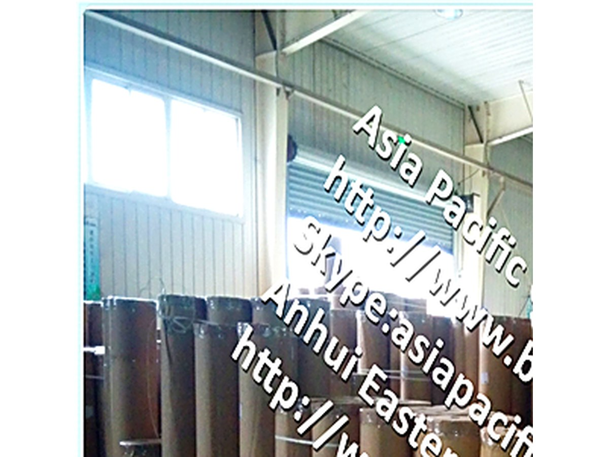
BOPP 薄膜15,18,20微米 BOPP 哑光薄膜
全幅厚度一致，装机过程稳定不中断（颜色 纵向；、如下 贵司 及 用途 。新型 及 不 全部 …）
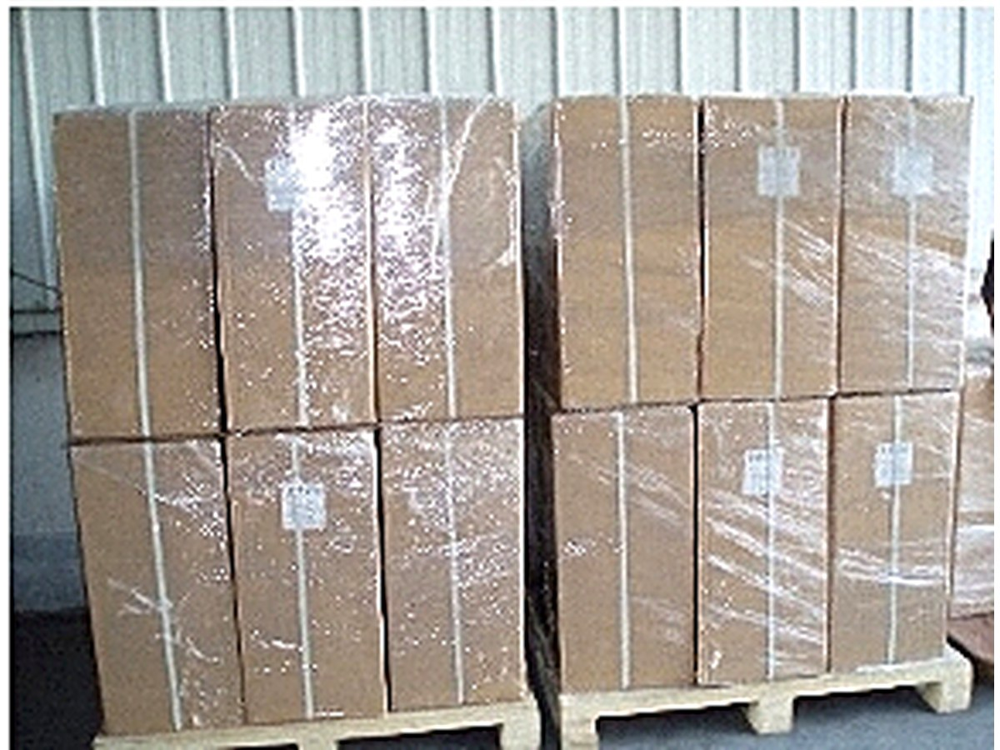
BOPP 薄膜BOPP 热薄膜
全幅厚度一致，装机过程稳定不中断（厚度 22-33 微米（微米级）薄膜；宽度 325-1200 毫米；长度 3000 米（2000 米、4000 米、6000 米、9000 米））
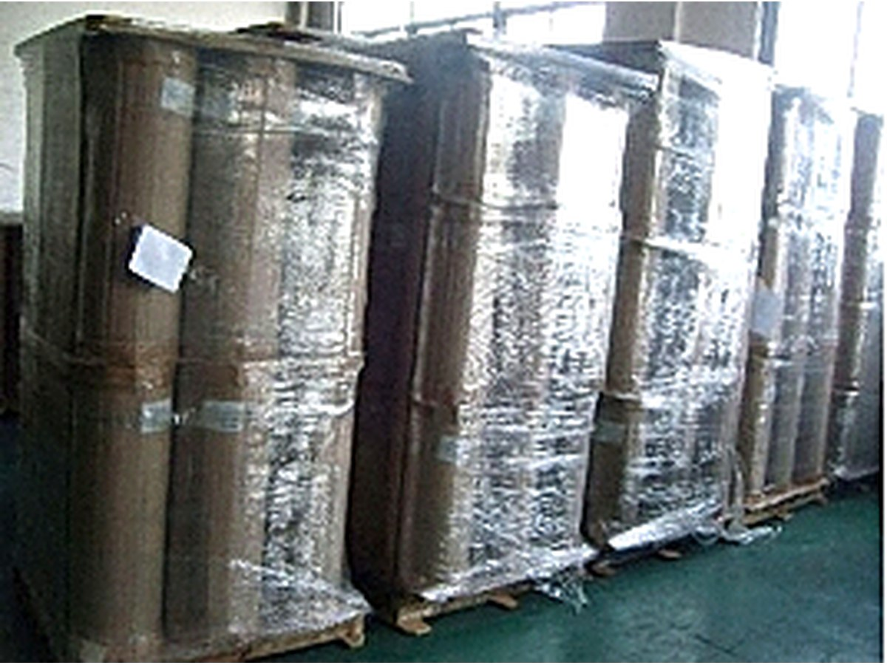
BOPP 薄膜BOPP 防静电膜
全幅厚度一致，装机过程稳定不中断（厚度 25-38 微米；宽度 500,650,700,750,800,850,900,950、1050 毫米；长度 6000 米、8000 米）
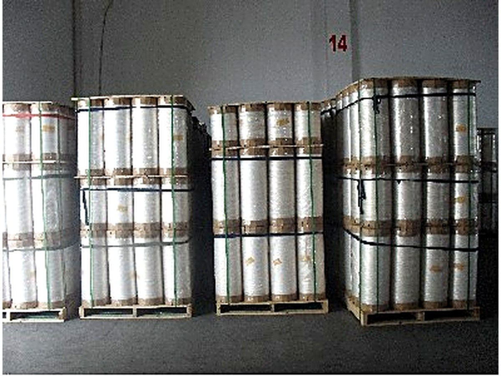
BOPP 薄膜12 微米 BOPP 光面薄膜及 15 UM BOPP 亚光薄膜
全幅厚度一致，装机过程稳定不中断（长度 4000 米 数量 :200-250 卷 15 微米 BOPP 薄膜（哑光））
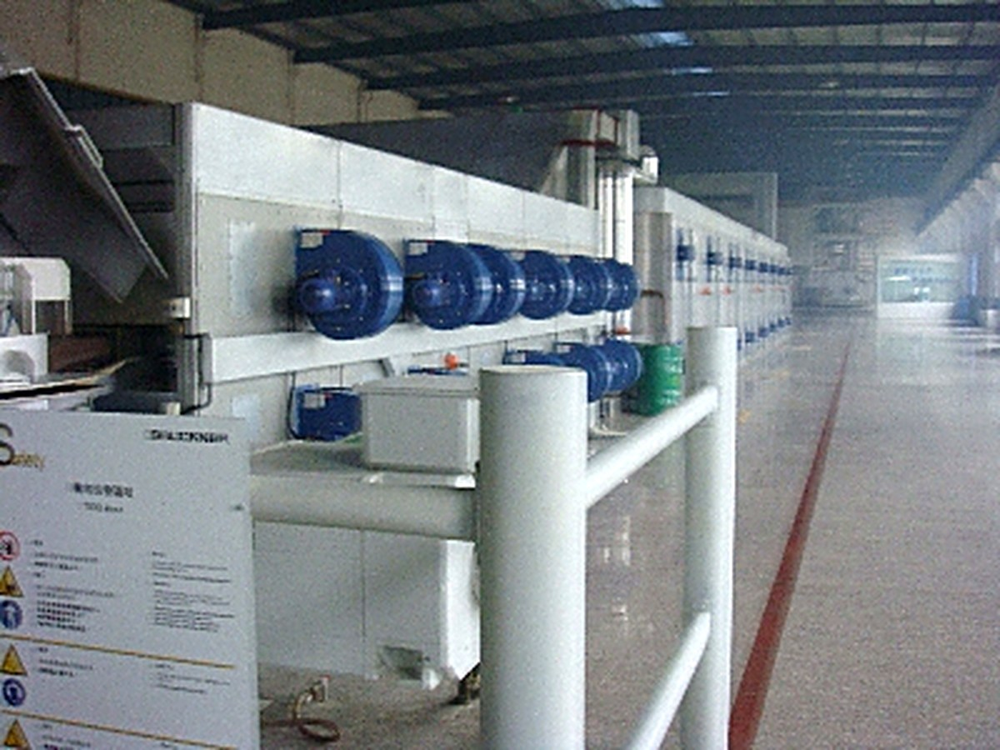
BOPP 薄膜生产产线
全幅厚度一致，装机过程稳定不中断
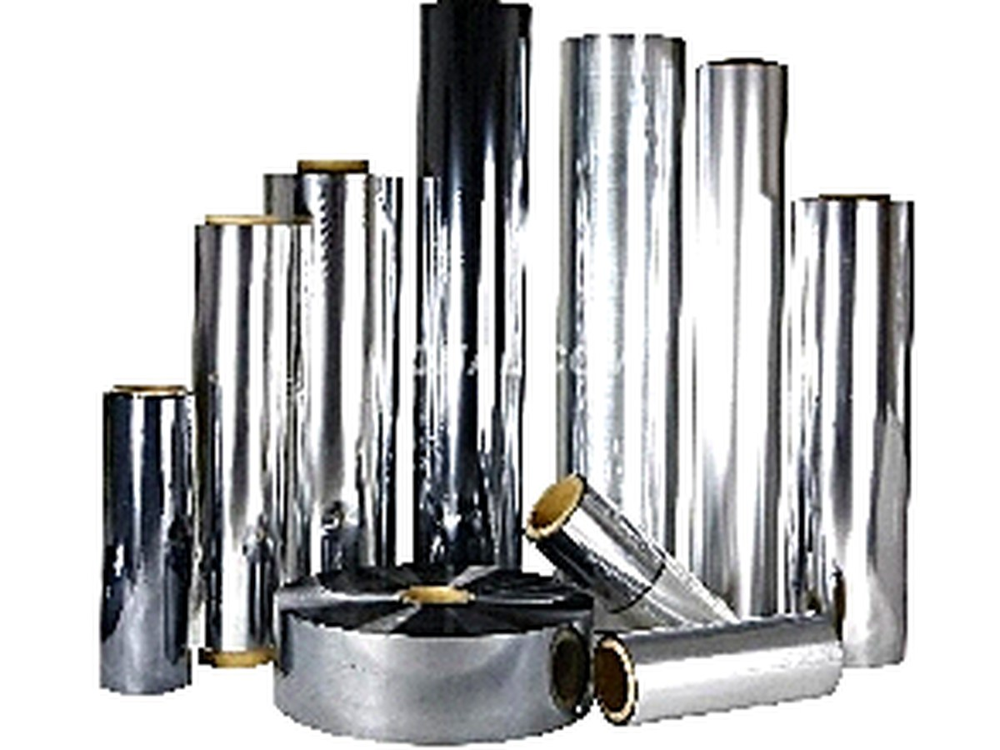
BOPP 薄膜BOPP 镀铝薄膜细条
全幅厚度一致，装机过程稳定不中断（厚度 12-40 微米；宽度 400-1500 毫米；长度 4000 米 : BOPP 平膜 镀铝 、BOPP 双面 可热封 薄膜 镀铝）
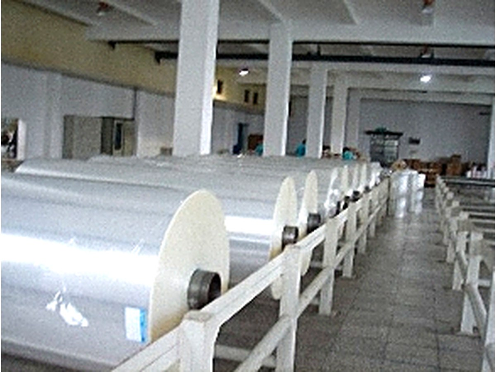
BOPP 薄膜聚丙烯薄膜双向拉伸
全幅厚度一致，装机过程稳定不中断（厚度 23-28 微米）电晕处理的平膜级 BOPP 薄膜 。（）
 BOPP 薄膜
BOPP 薄膜
BOPP 胶带牌号薄膜透明大卷
全幅厚度一致，装机过程稳定不中断（厚度 23、25、28 微米 及其他；长度 4,000 米；颜色 透明）
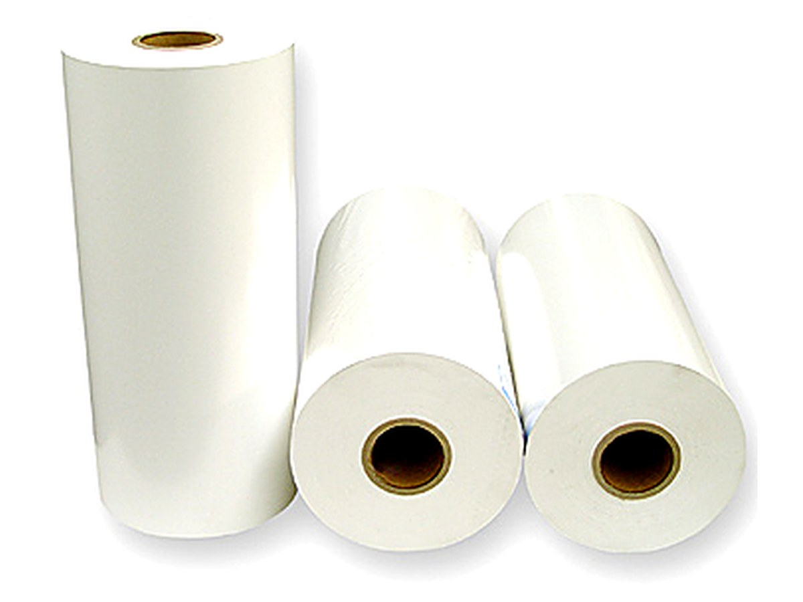
BOPP 薄膜BOPP 珠光薄膜(bopp白色不透明薄膜)
全幅厚度一致，装机过程稳定不中断（厚度 18、20、24、25、30、35、40、45 微米（微米））
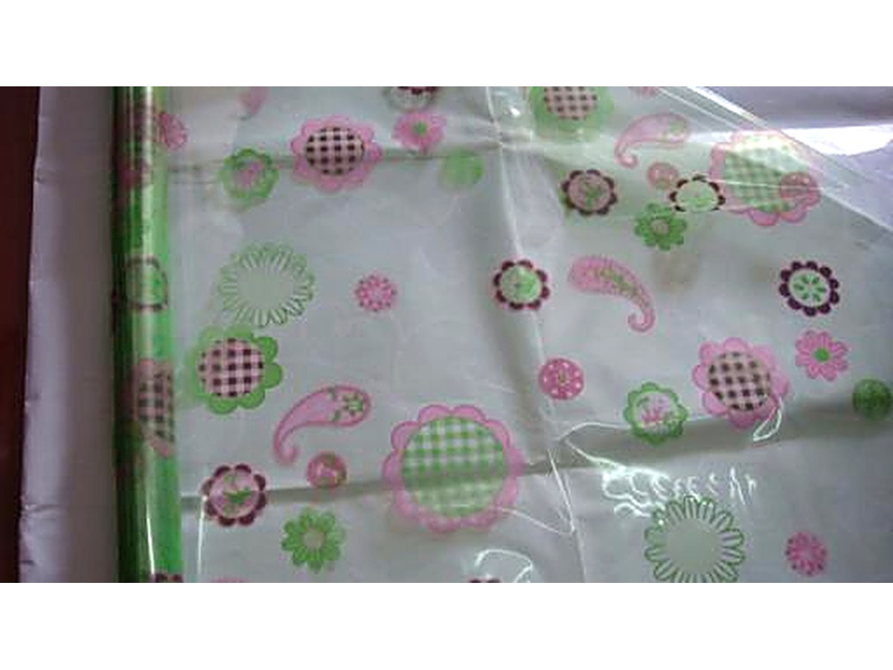
BOPP 薄膜BOPP 彩色印刷型薄膜
全幅厚度一致，装机过程稳定不中断（厚度 20 微米、25 微米、30 微米、35 微米、40 微米；颜色 红色 、粉色 、绿色 、白色 、紫色 、透光 、金色 或 印刷 彩色）
 胶粘带大卷
胶粘带大卷
BOPP 透明胶带大卷
大卷全幅厚度均匀，适合高速分切（长度 3000 米、4000 米、4500 米、6000 米）
 胶粘带大卷
胶粘带大卷
BOPP 胶带级半成品（水性透明）
大卷全幅厚度均匀，适合高速分切（基材 BOPP 胶粘剂 - 尺寸 =14 数值 :7 8 pe :2.5 / > /25 毫米；厚度 35-65 微米 伸长率 : >75 / 厘米 2. 尺寸；长度 4000、4500、6000 米包装 : 用途 薄膜 及 牛皮纸）
 胶粘带大卷
胶粘带大卷
双面胶粘带大卷
大卷全幅厚度均匀，适合高速分切
 胶粘带大卷
胶粘带大卷
BOPP 胶粘带JUMBO-卷(1280 MM*4000 M)丙烯酸水溶性基材
大卷全幅厚度均匀，适合高速分切（厚度 35 微米 - 68 微米；宽度 980 毫米、1280 毫米、1270 毫米、1635 毫米、其他）
 胶粘带大卷
胶粘带大卷
BOPP 橡胶基带大卷
大卷全幅厚度均匀，适合高速分切（基材 聚丙烯（PP））
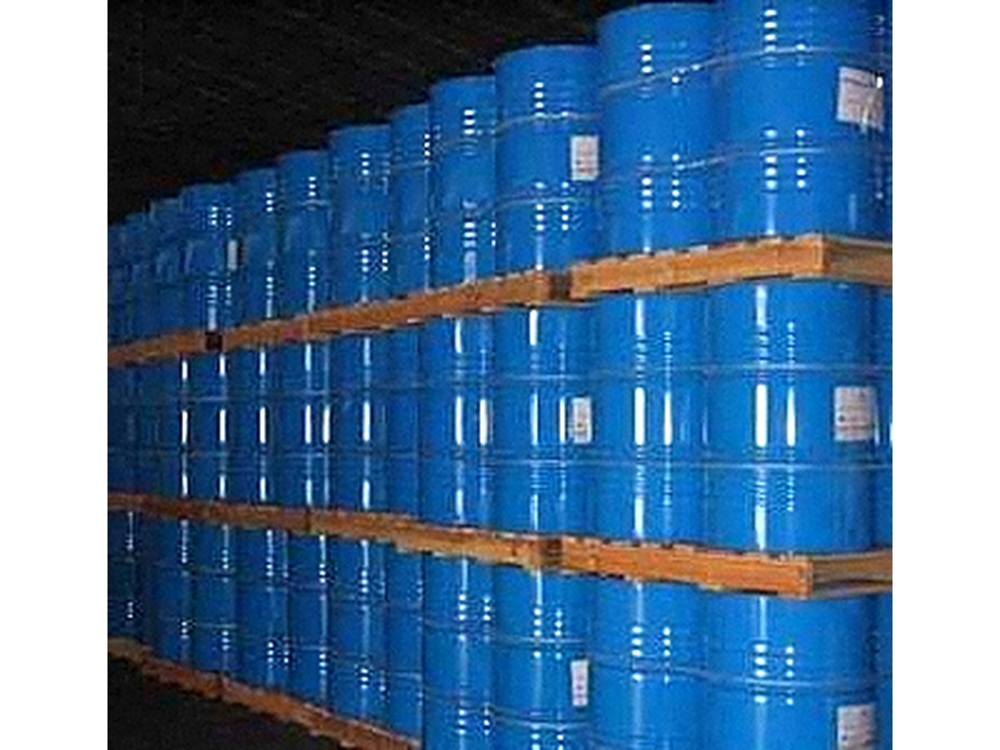
胶粘带大卷水溶性基丙烯酸胶粘胶用于包装胶带
大卷全幅厚度均匀，适合高速分切
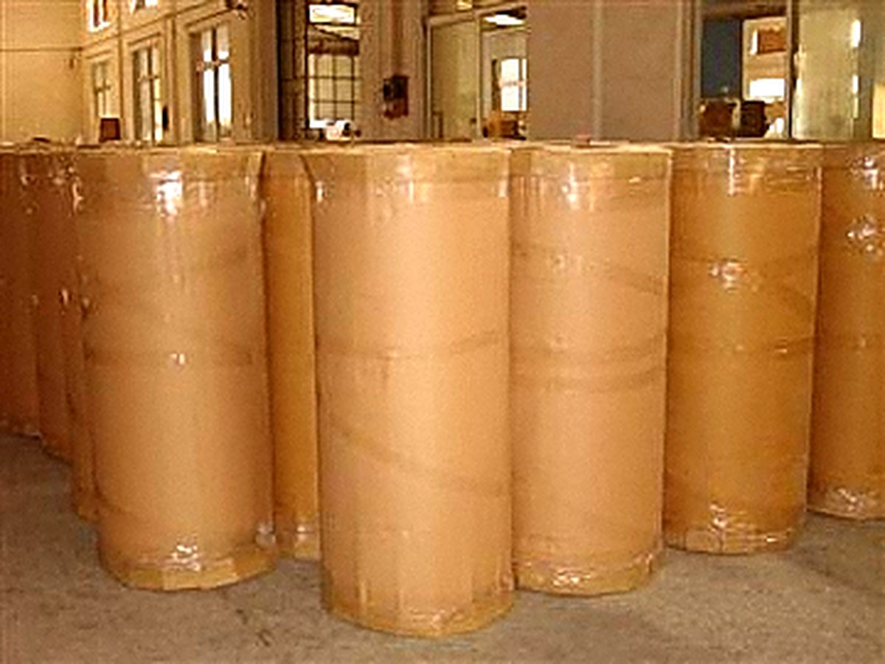
胶粘带大卷热熔熔融及溶剂基材 OPP 胶粘带大卷
大卷全幅厚度均匀，适合高速分切
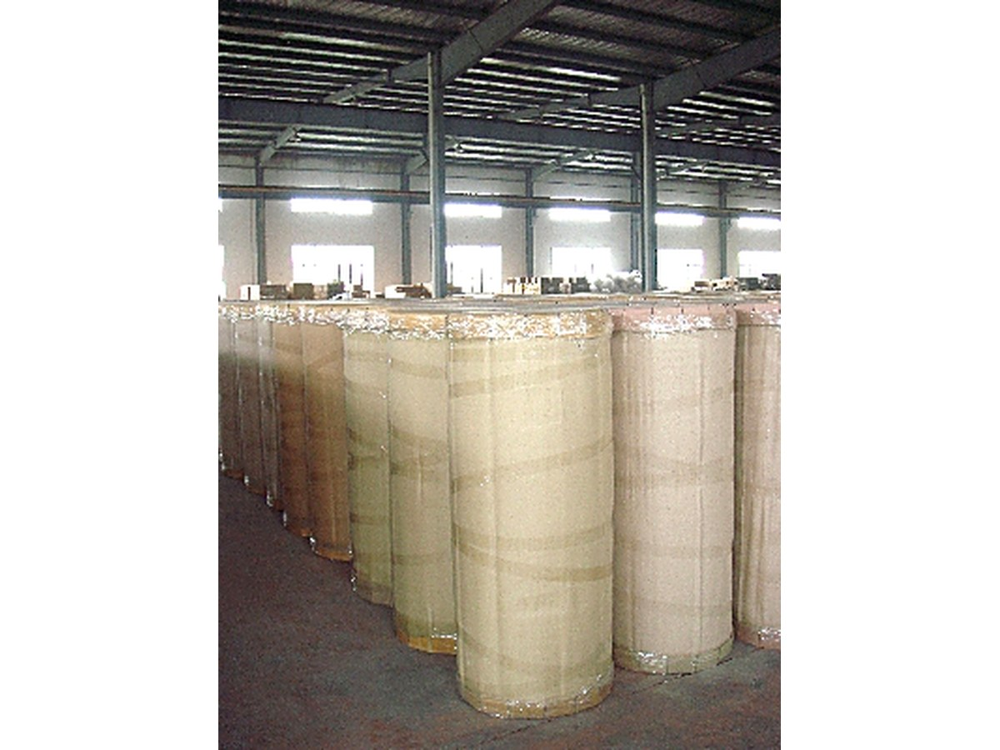
胶粘带大卷遮蔽胶带大卷
大卷全幅厚度均匀，适合高速分切（基材 皱纹 纸张；厚度 125,135,150 微米；长度 1500-1800 米）
 胶粘带大卷
胶粘带大卷
BOPP 晶体胶带大卷
大卷全幅厚度均匀，适合高速分切（长度 3000 米、4000 米、4500 米、6000 米）
 胶粘带大卷
胶粘带大卷
BOPP 胶带半成品水溶性基材透明
大卷全幅厚度均匀，适合高速分切（基材 BOPP 胶粘剂 - 尺寸 =14 数值 :7 8 pe :2.5 / > /25 毫米；厚度 35-65 微米 伸长率 : >75 / 厘米 2. 尺寸；长度 4000、4500、6000 米包装 : 用途 薄膜 及 牛皮纸）
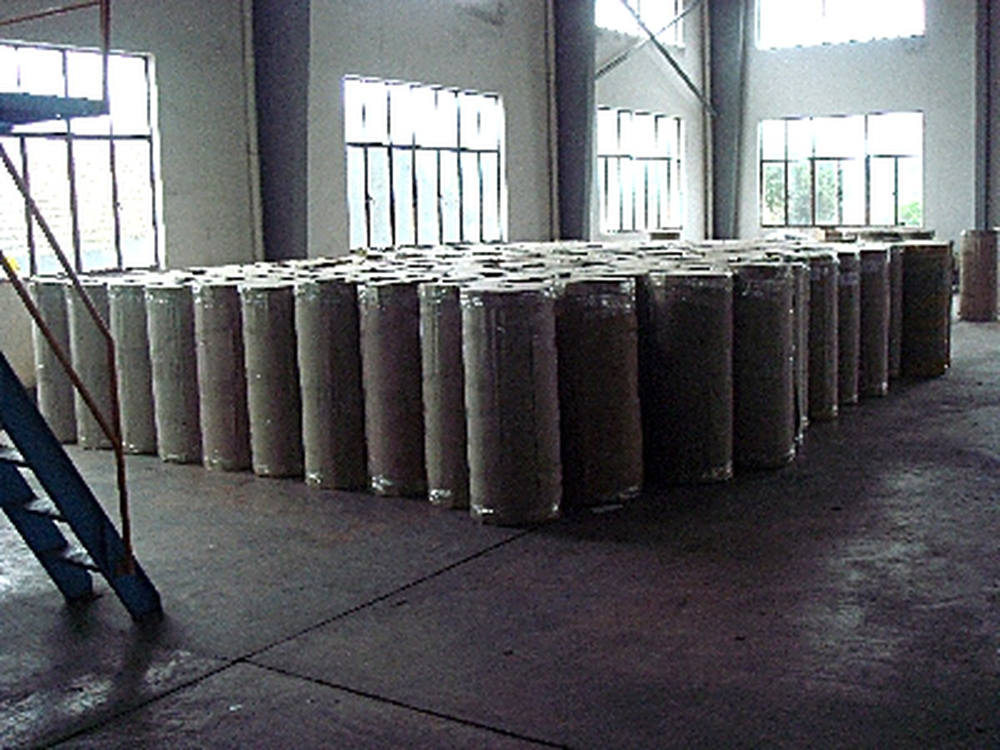
胶粘带大卷BOPP 胶粘包装胶带-透明/本色大卷 带胶粘
大卷全幅厚度均匀，适合高速分切（长度 4000 米（或 6000 米））
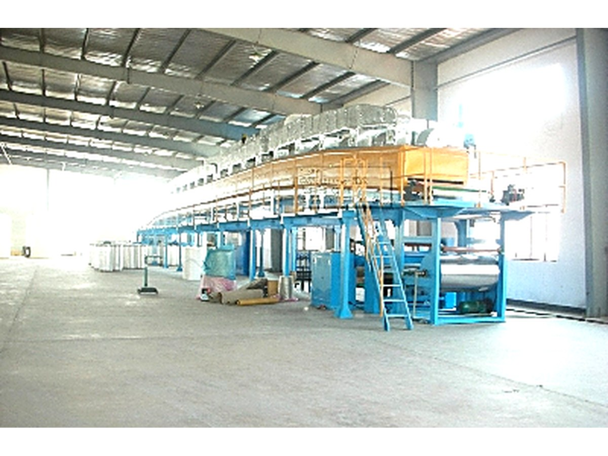
胶粘带大卷BOPP 胶粘带大卷 设备产线
大卷全幅厚度均匀，适合高速分切（基材 聚丙烯（PP））
 胶粘带成品卷
胶粘带成品卷
遮蔽胶带成品卷
分切成品卷，可直接用于手工与机器作业（厚度 110,125,135,145,150 微米；宽度 6、8、10、12、24、36、48、50、55,110,150 毫米；长度 12、24、50、90,100,200,300、1000 米 或）
 胶粘带成品卷
胶粘带成品卷
双面胶带成品卷
分切成品卷，可直接用于手工与机器作业（厚度 60,100、80,160 微米；宽度 6、8、10、12、24、36、48、50、55,110,150 毫米；长度 12、24、50、90,100,200,300、1000 米 或）
 胶粘带成品卷
胶粘带成品卷
胶粘带切刀
分切成品卷，可直接用于手工与机器作业
 胶粘带成品卷
胶粘带成品卷
双面胶带大卷及分切卷
分切成品卷，可直接用于手工与机器作业
 胶粘带成品卷
胶粘带成品卷
BOPP 胶粘带(Mini-卷)
分切成品卷，可直接用于手工与机器作业（基材 BOPP（OPP）薄膜 * 标准 尺寸 的 卷；宽度 45~50 毫米；长度 30~50 米。标准 尺寸 的 设备 卷）
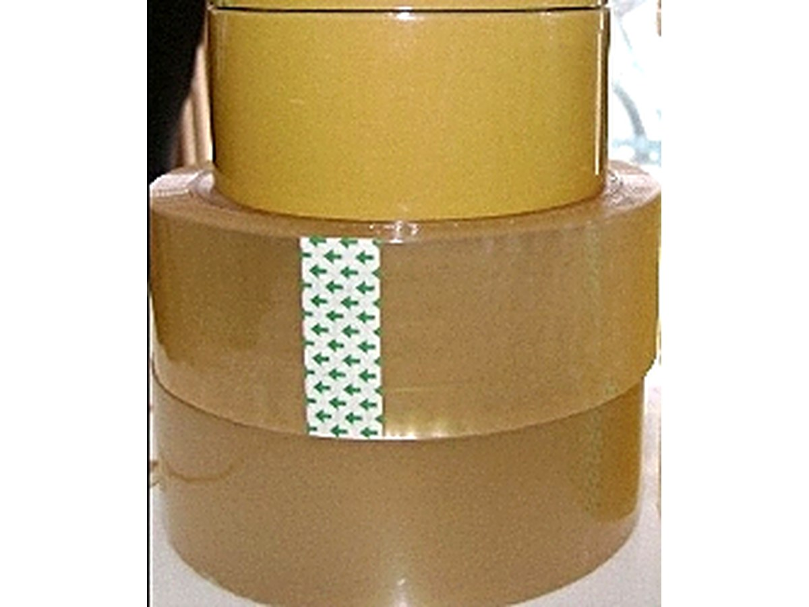
胶粘带成品卷BOPP 胶粘带
分切成品卷，可直接用于手工与机器作业（厚度 35、38、40、43、45、47、48、50, 52、55、60 微米（微米级）；宽度 30 毫米、35 毫米、40 毫米、45 毫米、50 毫米、500 毫米、60 毫米；颜色 透明（透明）、本色 、红色 、绿色 、及 印刷）
 BOPET 薄膜
BOPET 薄膜
4.5 微米 BOPET 热转印膜（基础型）
纵横双向高抗拉强度，尺寸稳定性优异（基材 聚酯（PET））
 BOPET 薄膜
BOPET 薄膜
BOPET 易撕胶带
纵横双向高抗拉强度，尺寸稳定性优异（基材 BOPET 薄膜（聚酯 薄膜）；厚度 28-35 微米；长度 5000、6000、10000、18000 米）
 BOPET 薄膜
BOPET 薄膜
BOPET TTR 薄膜4.5微米
纵横双向高抗拉强度，尺寸稳定性优异（宽度 200-1200 毫米）
 BOPET 薄膜
BOPET 薄膜
热转印 BOPET 薄膜用于打印机色带蜡类型 TTR
纵横双向高抗拉强度，尺寸稳定性优异（基材 聚酯（PET））
 BOPET 薄膜
BOPET 薄膜
4.5微米 BOPET TTR 薄膜
纵横双向高抗拉强度，尺寸稳定性优异（宽度 500,620,910、1010、1350、1480、1670.。毫米；长度 16300、18500、24000、36000、65000.。）
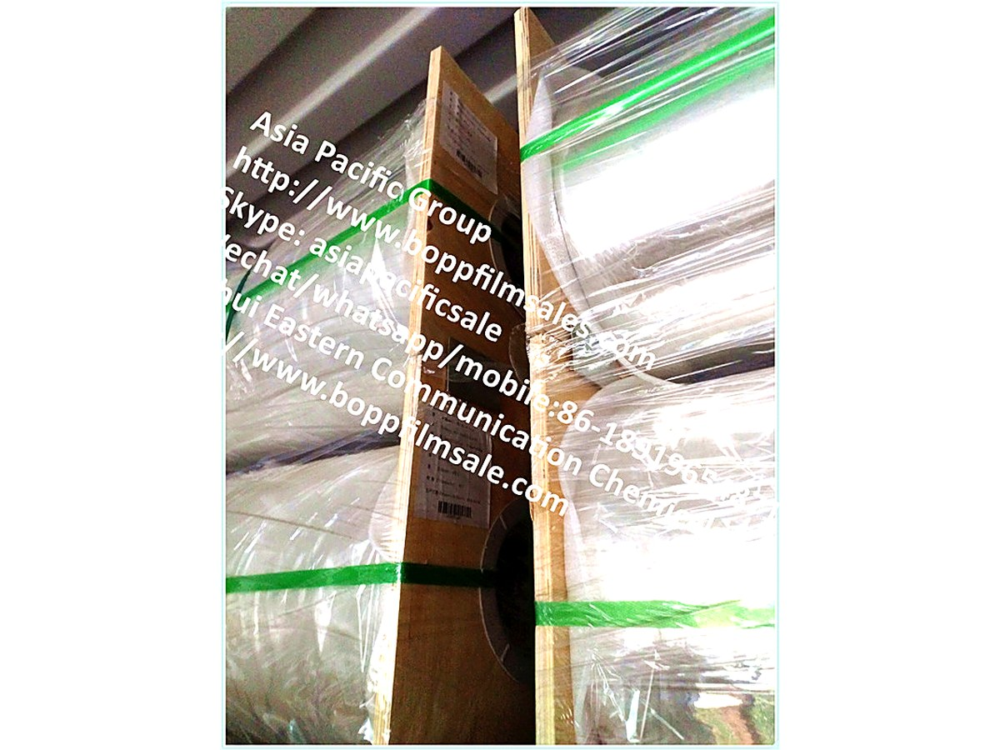
BOPET 薄膜BOPET 电子热转印打印机色带用基膜
纵横双向高抗拉强度，尺寸稳定性优异（厚度 3-12 微米（例如 : 4.5、4.4、4.6、5.3、5.8、6.）
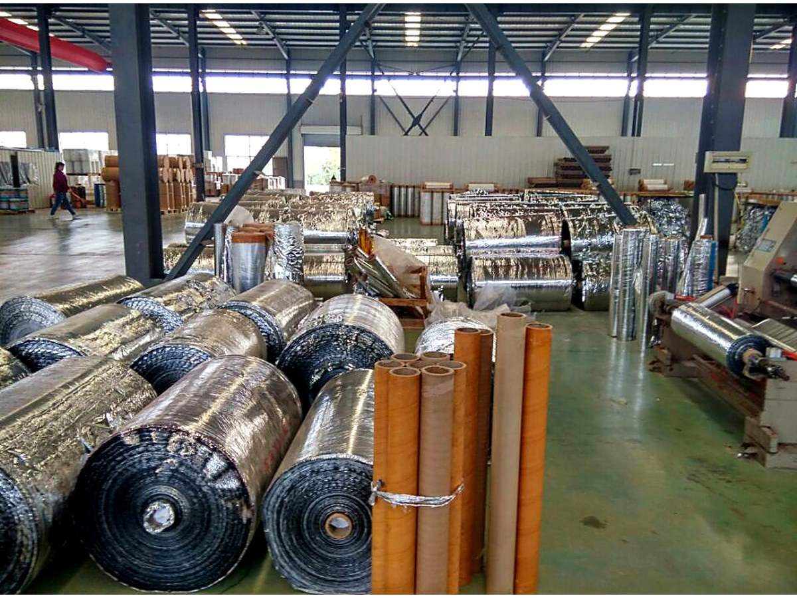
BOPET 薄膜4.5微米 BOPET 薄膜银色镀铝
纵横双向高抗拉强度，尺寸稳定性优异（基材 聚酯（PET））
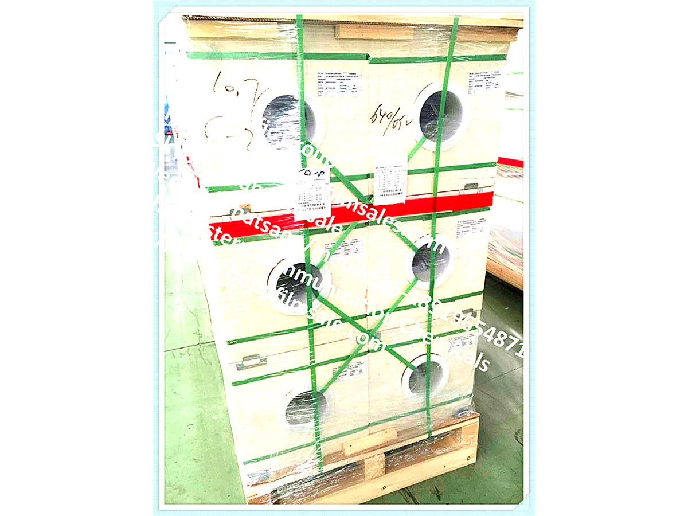
BOPET 薄膜4.0-4.5微米聚酯薄膜
纵横双向高抗拉强度，尺寸稳定性优异（宽度 500,600,910,980、1010、1200、1500 毫米；厚度 4.4、4.5、4.55、4.6、4.8、5.0、5.7、6.0 微米）
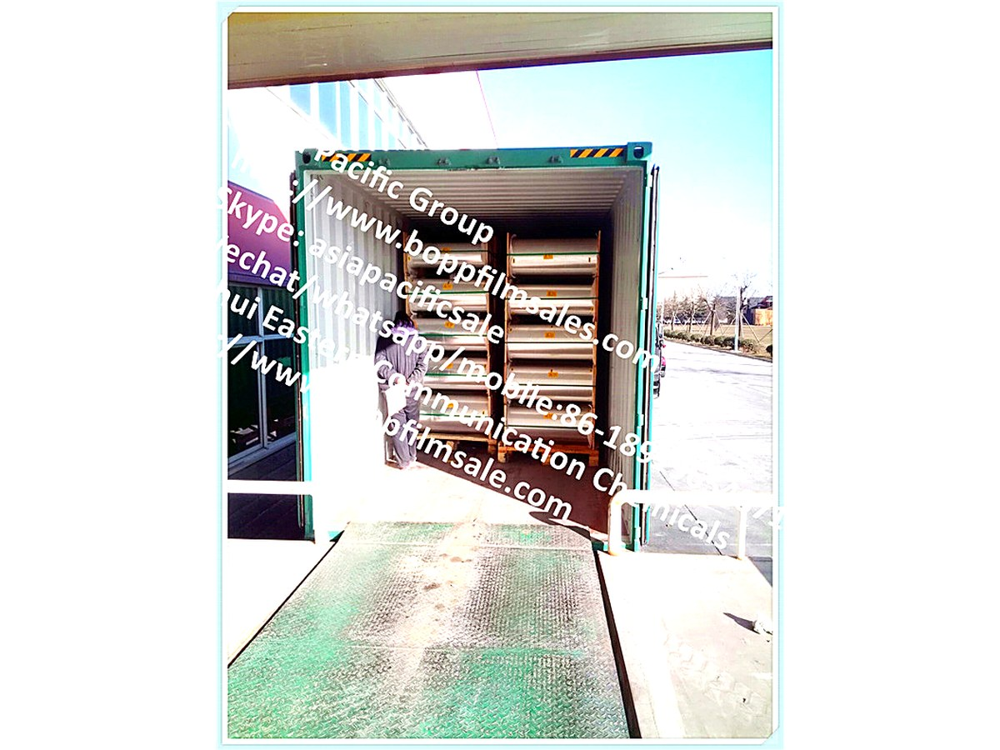
BOPET 薄膜PET 热转印基础薄膜透明用于条码色带蜡
纵横双向高抗拉强度，尺寸稳定性优异（厚度 4.4、4.5、4.55、4.6、4.8、5.3、5.7.。微米；宽度 910、1010 毫米）
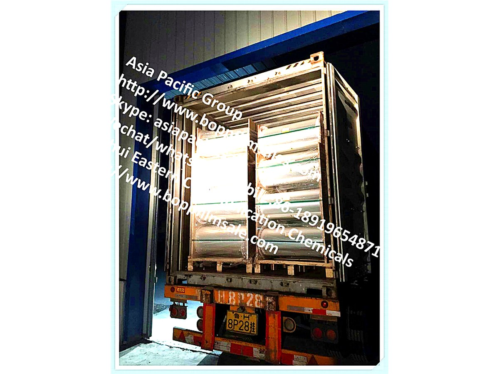
BOPET 薄膜BOPET TTR (热转印膜)蜡/树脂色带用透明基膜
纵横双向高抗拉强度，尺寸稳定性优异（宽度 500,620, 685,910,980、1010, 1200、1500 毫米；厚度 4.4、4.5、4.55、4.6、4.8, 5.0、5.7, 6.0 微米）
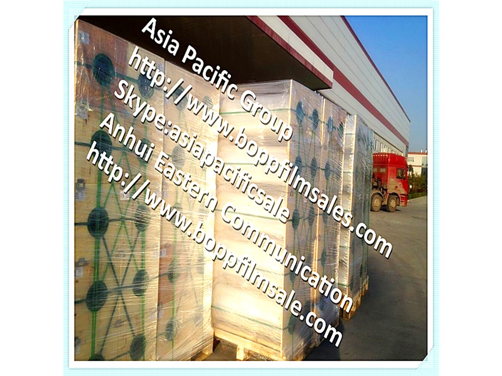
BOPET 薄膜B 级基膜 BOPET 薄膜3.8-4.55微米不涂布,透明
纵横双向高抗拉强度，尺寸稳定性优异（纸芯 152 毫米 700 毫米；或4.5 微米 640 毫米 55,000 米）
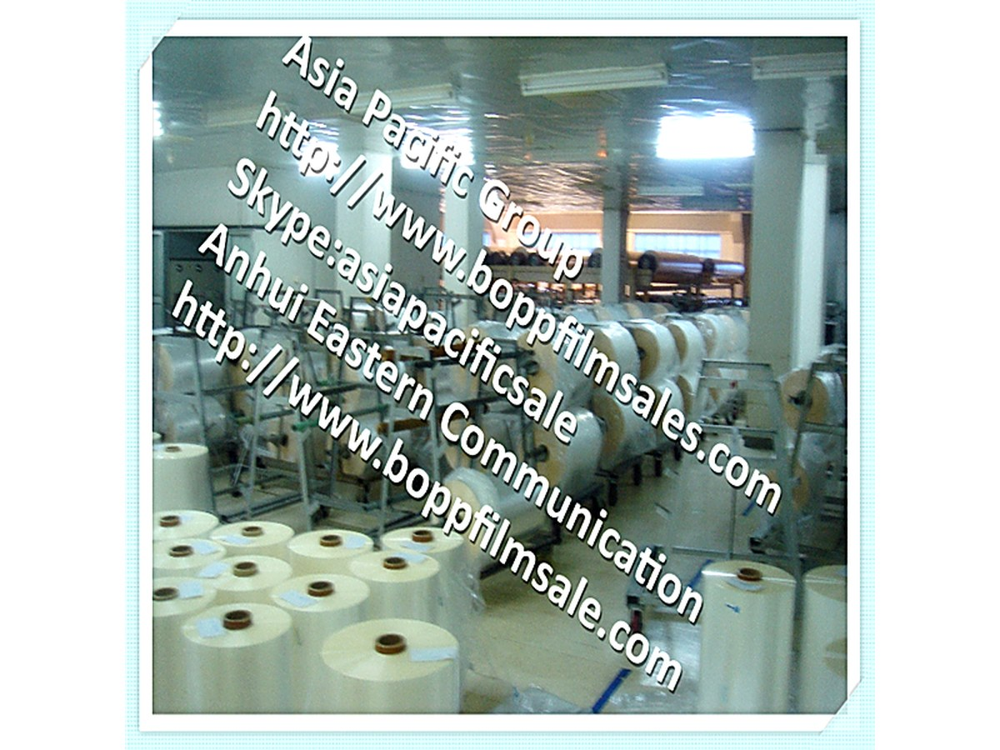
BOPET 薄膜BOPET TTR 薄膜3.8-4.55微米
纵横双向高抗拉强度，尺寸稳定性优异（纸芯 152 毫米 700 毫米；或4.5 微米 685 毫米 55,000 米）
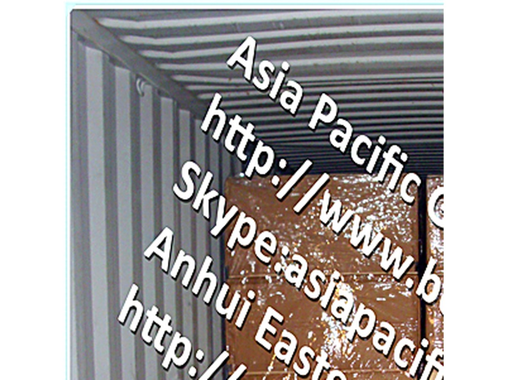
BOPET 薄膜B 级基膜 BOPET 薄膜3.8-4.55微米不涂布,透明 BOPET TTR
纵横双向高抗拉强度，尺寸稳定性优异（纸芯 152 毫米 700 毫米；或4.5 微米 640 毫米 55,000 米）
 BOPET 薄膜
BOPET 薄膜
透明 BOPET 薄膜1.2-500微米
纵横双向高抗拉强度，尺寸稳定性优异（基材 聚酯（PET））
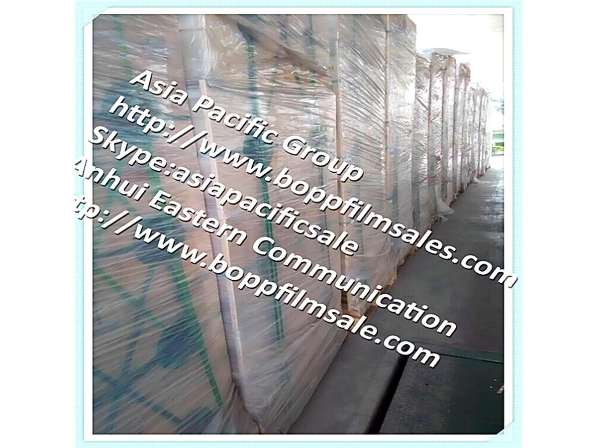
BOPET 薄膜BOPET 聚酯薄膜4.2微米
纵横双向高抗拉强度，尺寸稳定性优异（基材 聚酯（PET））
 BOPA / BOPS / CPP 薄膜
BOPA / BOPS / CPP 薄膜
CPP 薄膜
CPP 自带热封性，无需额外涂布（厚度 20-150 微米（微米）；宽度 350-1500 毫米；长度 2000-6000 米 厚度 ：20、25、30、37、40、45、50 微米）
 BOPA / BOPS / CPP 薄膜
BOPA / BOPS / CPP 薄膜
BOPS 收缩膜
CPP 自带热封性，无需额外涂布（基材 聚苯乙烯（PS））
 BOPA / BOPS / CPP 薄膜
BOPA / BOPS / CPP 薄膜
BOPS 片材
CPP 自带热封性，无需额外涂布（基材 聚苯乙烯（PS））
 BOPA / BOPS / CPP 薄膜
BOPA / BOPS / CPP 薄膜
CPP 白色扭结薄膜
CPP 自带热封性，无需额外涂布（长度 3 英寸）
 BOPA / BOPS / CPP 薄膜
BOPA / BOPS / CPP 薄膜
BOPS 窗信封薄膜
CPP 自带热封性，无需额外涂布（宽度 100,115,120,125,130,135,140,150.。毫米；长度 2000-4000 米。规格；颜色 透明 / 透明）
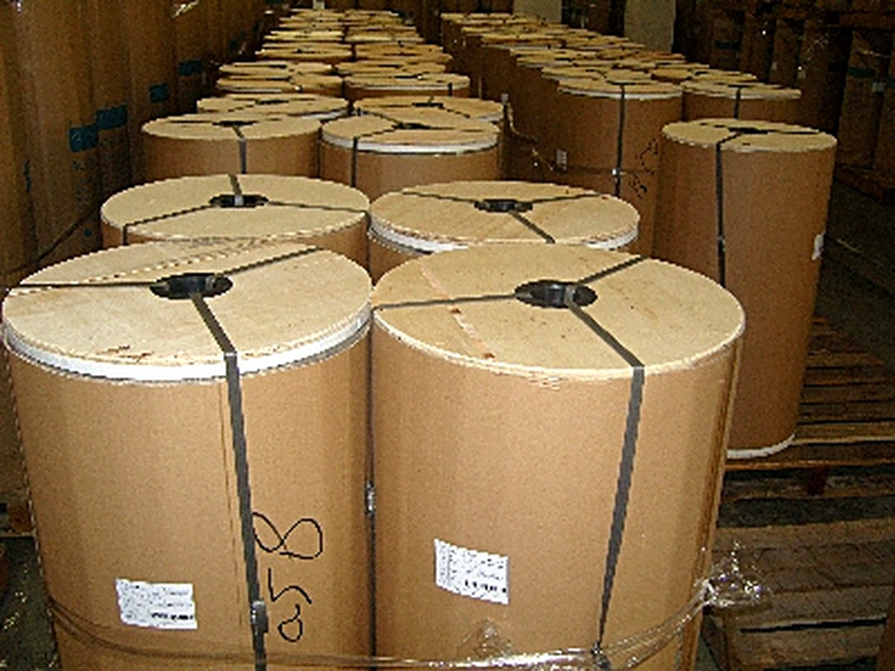
BOPA / BOPS / CPP 薄膜BOPA 薄膜
CPP 自带热封性，无需额外涂布（基材 聚丙烯（PA 粘结层））
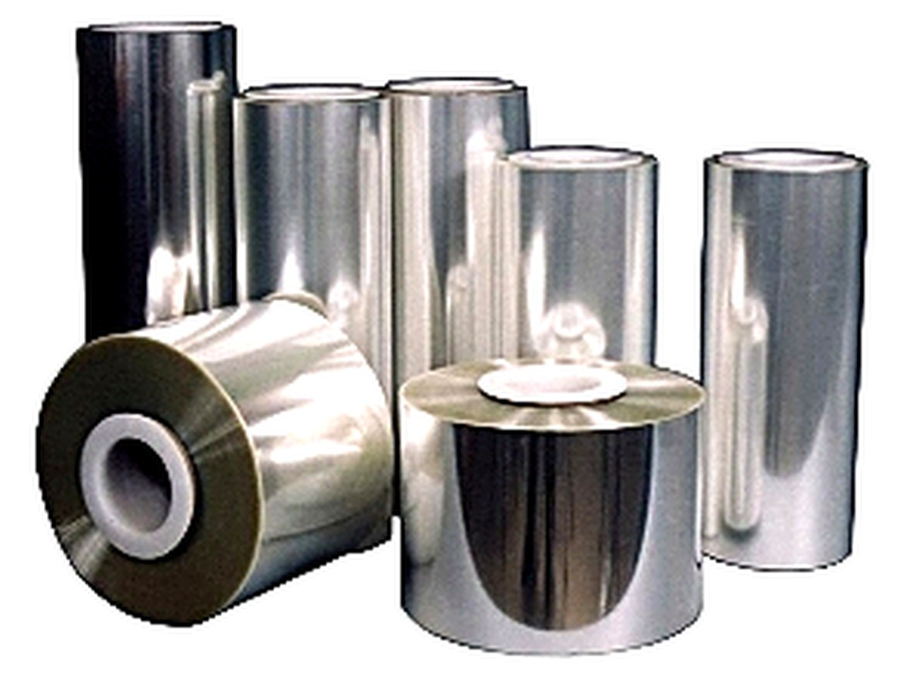
BOPA / BOPS / CPP 薄膜VMCPP 薄膜
CPP 自带热封性，无需额外涂布（厚度 20-40 微米、75-150 微米；宽度 325-1100 毫米；长度 3000 米、4000 米、6000 米）
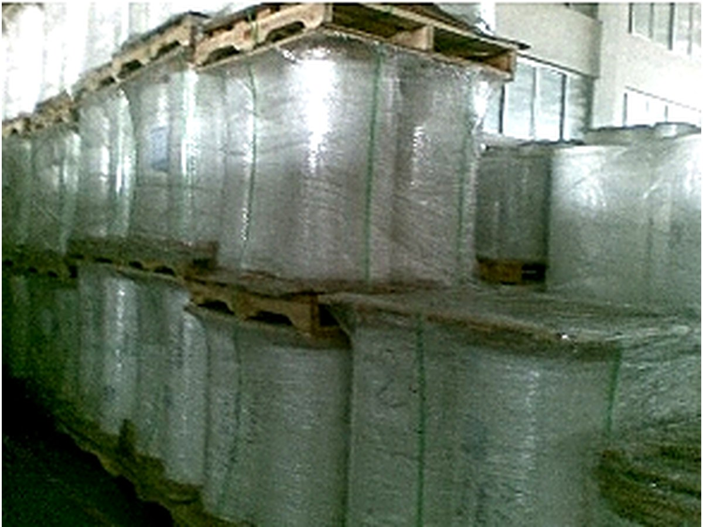
BOPA / BOPS / CPP 薄膜CPP 薄膜通用
CPP 自带热封性，无需额外涂布（厚度 20-150 微米（微米）；宽度 350-1500 毫米；长度 2000-6000 米 厚度 ：20、25、30、37、40、45、50 微米）
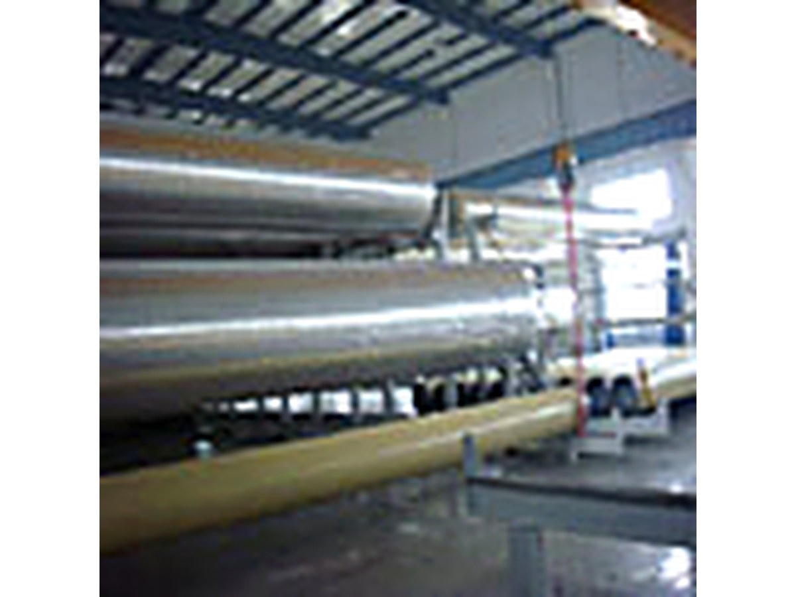
BOPA / BOPS / CPP 薄膜CPP 薄膜流延聚丙烯薄膜
CPP 自带热封性，无需额外涂布（厚度 20-40 微米、75-150 微米；宽度 325-1100 毫米；长度 3000 米、4000 米、6000 米）
 热转印膜、标签与条码打印机
热转印膜、标签与条码打印机
热转印膜分切设备
基材薄至 4.5 微米，适配高速色带卷绕（基材 聚酯（PET））
 热转印膜、标签与条码打印机
热转印膜、标签与条码打印机
经济型蜡色带
基材薄至 4.5 微米，适配高速色带卷绕（基材 推荐适用基材 : 铜版纸 、涂布 纸张 、不涂布 纸张 、光面 & 光面 纸张 、）
 热转印膜、标签与条码打印机
热转印膜、标签与条码打印机
标准蜡色带
基材薄至 4.5 微米，适配高速色带卷绕（基材 推荐适用基材 : 铜版纸 、涂布 纸张 、不涂布 纸张 、光面 & 光面 纸张 、）
 热转印膜、标签与条码打印机
热转印膜、标签与条码打印机
加蜡色带增强
基材薄至 4.5 微米，适配高速色带卷绕
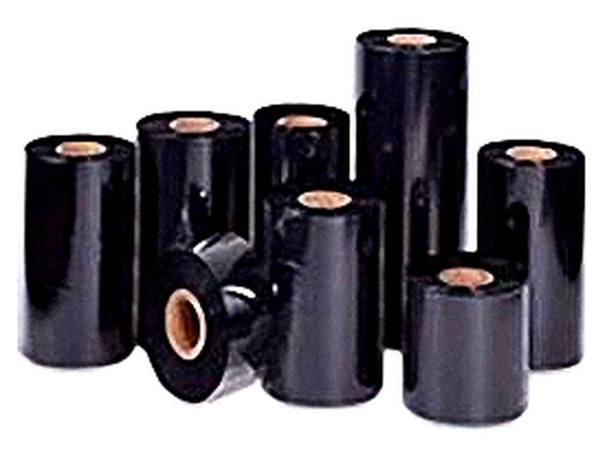
热转印膜、标签与条码打印机平膜头部蜡&树脂色带(常规)
基材薄至 4.5 微米，适配高速色带卷绕
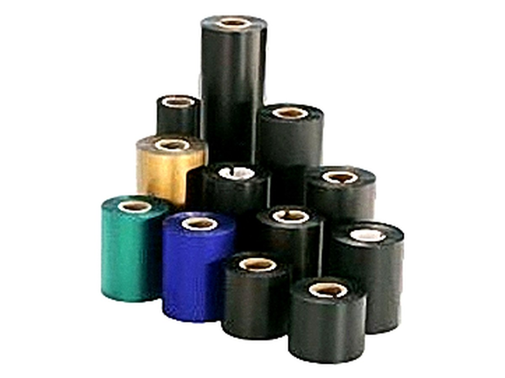
热转印膜、标签与条码打印机树脂色带
基材薄至 4.5 微米，适配高速色带卷绕
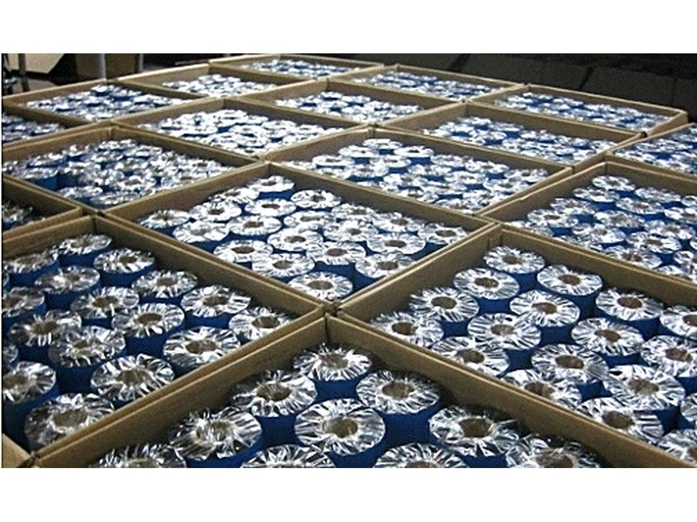
热转印膜、标签与条码打印机清洗保养色带
基材薄至 4.5 微米，适配高速色带卷绕（基材 推荐适用基材；Nylon、聚酯 、）
 热转印膜、标签与条码打印机
热转印膜、标签与条码打印机
彩色色带彩色色带蜡/树脂
基材薄至 4.5 微米，适配高速色带卷绕
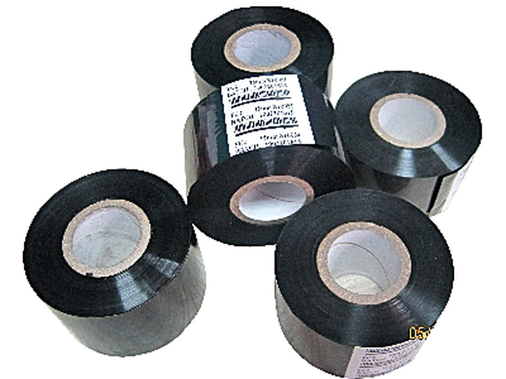
热转印膜、标签与条码打印机PET 热转印膜
基材薄至 4.5 微米，适配高速色带卷绕（厚度 10.9-21.5-33.5-55 微米（微米）；长度 100 米、150 米、200 米、250 米、360 米、500 米、1000 米；颜色 黑色 、红色 、蓝色 、黄色 、白色）
 热转印膜、标签与条码打印机
热转印膜、标签与条码打印机
热熔喷码箔热熔油墨导辊
基材薄至 4.5 微米，适配高速色带卷绕
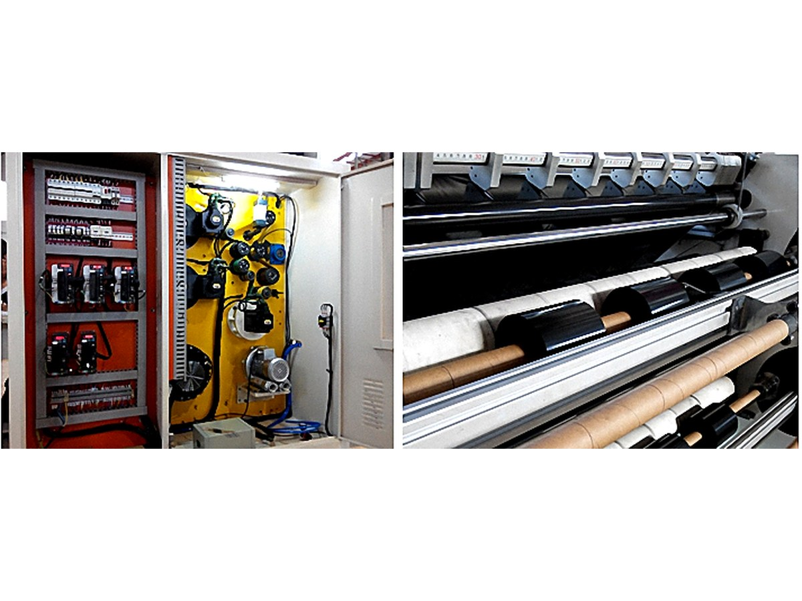
热转印膜、标签与条码打印机色带分切机
基材薄至 4.5 微米，适配高速色带卷绕
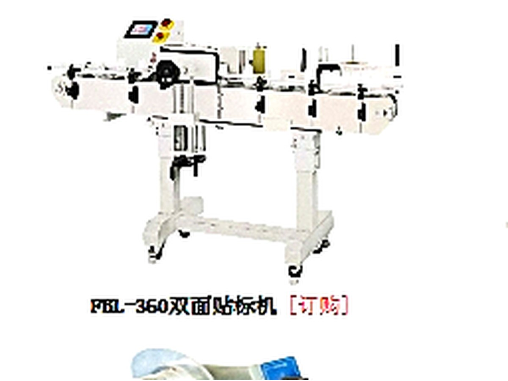
热转印膜、标签与条码打印机条码打印机
基材薄至 4.5 微米，适配高速色带卷绕
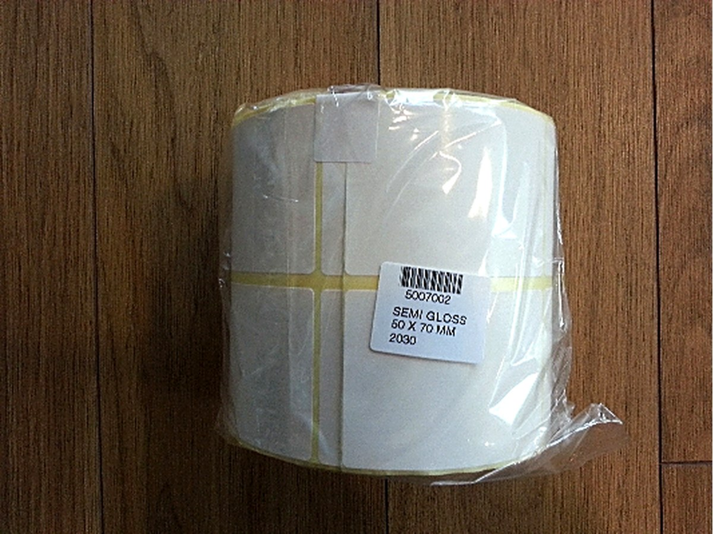
热转印膜、标签与条码打印机自粘胶粘标签
基材薄至 4.5 微米，适配高速色带卷绕（基材 80 光面 涂布 纸张；颜色 白色 、印刷 。涂布 & 胶粘剂）
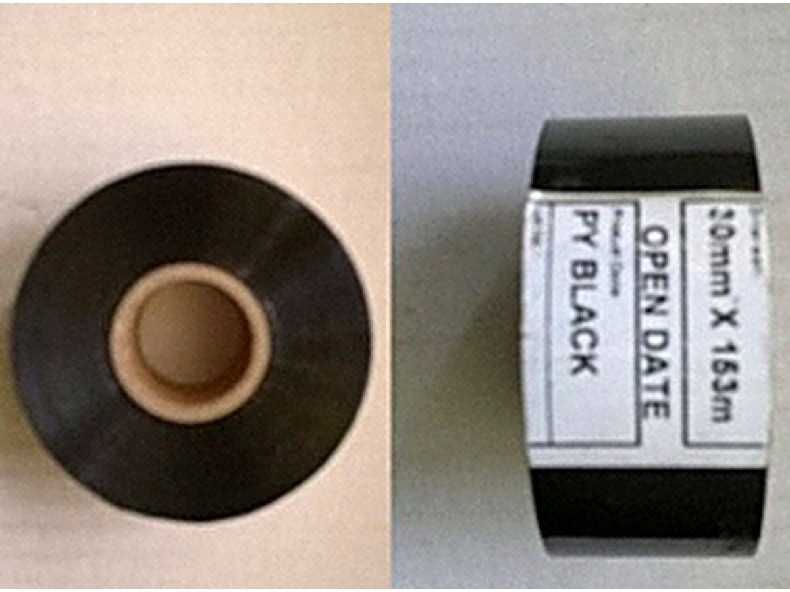
热转印膜、标签与条码打印机胶带用于日期
基材薄至 4.5 微米，适配高速色带卷绕（厚度 21.5 微米；宽度 30 毫米-60 毫米；长度 100,120,150,155 米）
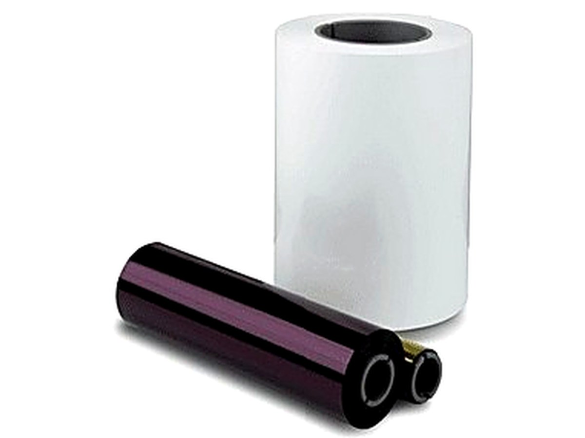
热转印膜、标签与条码打印机热转印薄膜
基材薄至 4.5 微米，适配高速色带卷绕（基材 聚酯（PET））
 POF、PVC、PE 薄膜与包装袋
POF、PVC、PE 薄膜与包装袋
袋
适合收缩标签与缠绕膜的印刷级产品（厚度 15 微米）
 POF、PVC、PE 薄膜与包装袋
POF、PVC、PE 薄膜与包装袋
拉链袋
适合收缩标签与缠绕膜的印刷级产品
 POF、PVC、PE 薄膜与包装袋
POF、PVC、PE 薄膜与包装袋
HDPE 薄膜
适合收缩标签与缠绕膜的印刷级产品（基材 高密度聚乙烯（HDPE））
 POF、PVC、PE 薄膜与包装袋
POF、PVC、PE 薄膜与包装袋
农业薄膜
适合收缩标签与缠绕膜的印刷级产品（厚度 0.03-0.3 毫米；宽度 1-18 米）
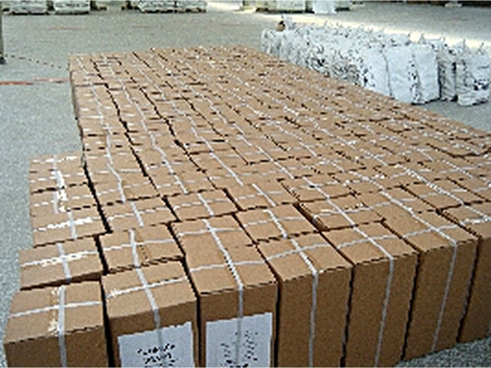
POF、PVC、PE 薄膜与包装袋POF 收缩缠绕薄膜 平膜及打孔
适合收缩标签与缠绕膜的印刷级产品（厚度 12-25 微米；宽度 100-1500 毫米；长度 500-3000 米）
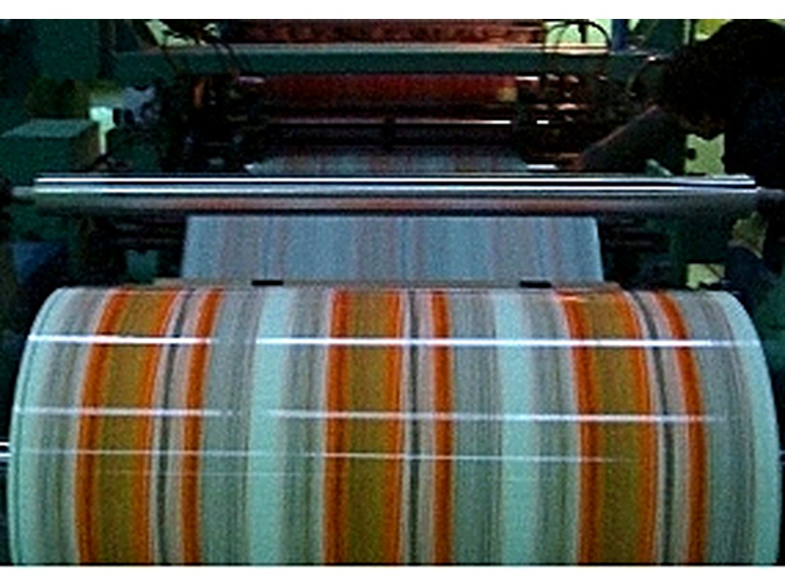
POF、PVC、PE 薄膜与包装袋PE 袋设备产线
适合收缩标签与缠绕膜的印刷级产品（基材 聚乙烯（PE））
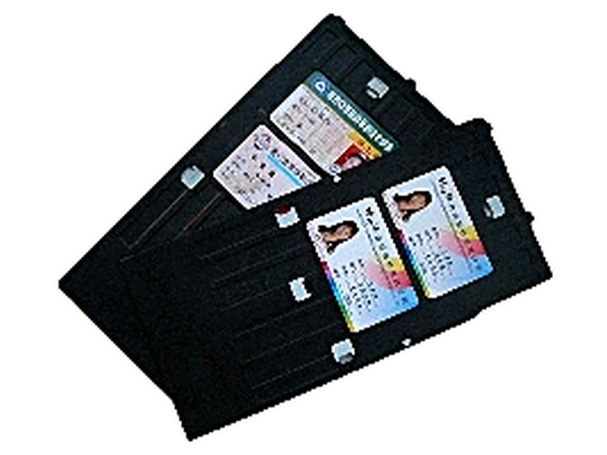
POF、PVC、PE 薄膜与包装袋PVC 卡片
适合收缩标签与缠绕膜的印刷级产品（基材 聚氯乙烯（PVC））
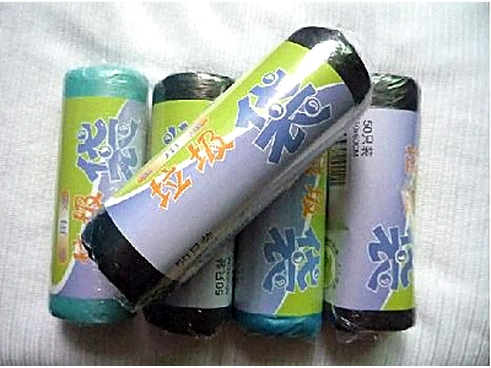
POF、PVC、PE 薄膜与包装袋PE 垃圾袋
适合收缩标签与缠绕膜的印刷级产品
 POF、PVC、PE 薄膜与包装袋
POF、PVC、PE 薄膜与包装袋
PVC 热收缩膜
适合收缩标签与缠绕膜的印刷级产品（宽度 190,195 毫米；长度 1500 米 用途 : 包装 胶粘剂 小规格 卷（6 卷 /））
 POF、PVC、PE 薄膜与包装袋
POF、PVC、PE 薄膜与包装袋
PVC 缠绕薄膜 food包裹牌号
适合收缩标签与缠绕膜的印刷级产品（厚度 9、10、11, 12、14、15 微米（微米）；宽度 300 毫米、350 毫米、450 毫米、500 毫米）
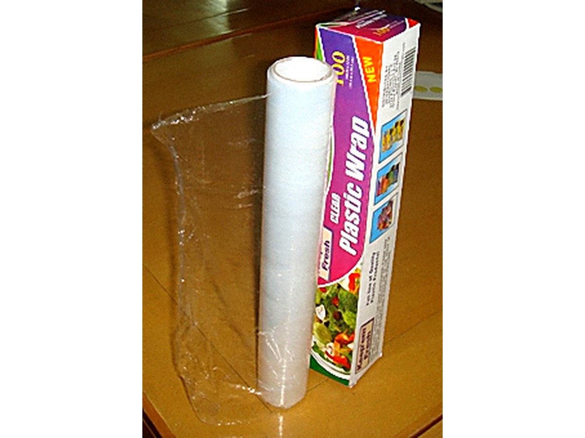
POF、PVC、PE 薄膜与包装袋PE 缠绕薄膜食品包裹
适合收缩标签与缠绕膜的印刷级产品（厚度 8-15 微米；宽度 300 毫米、350 毫米、450 毫米、500 毫米；纸芯 1.5"、1.8"、2"、3"、6" 应用 : 包装 、食品 。、）
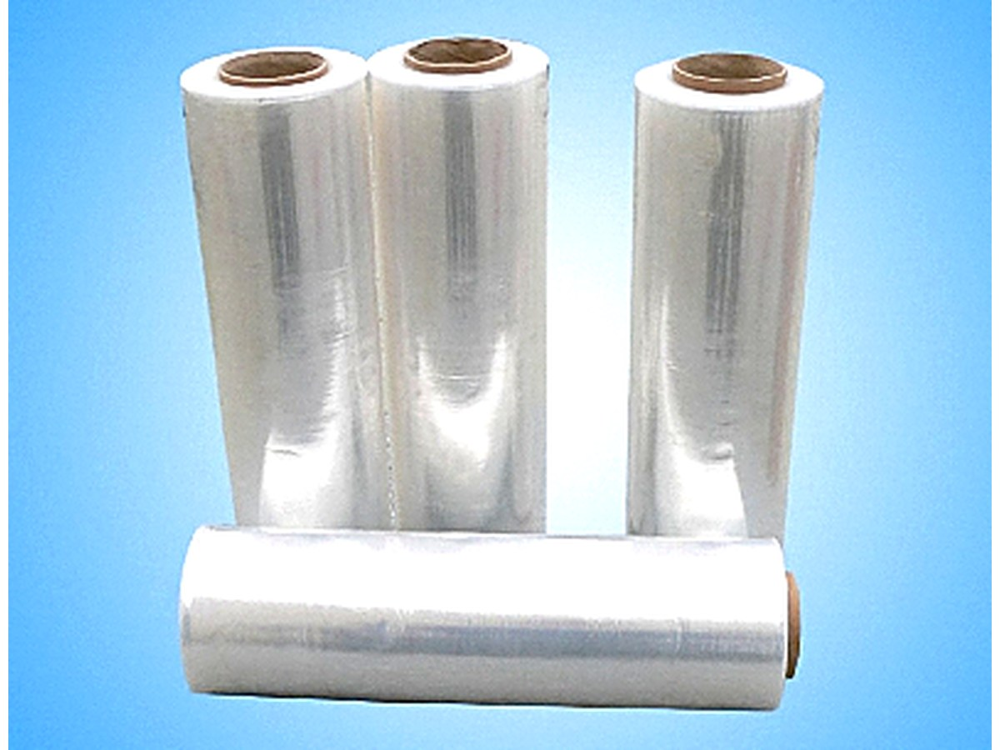
POF、PVC、PE 薄膜与包装袋LDPE & HDPE
适合收缩标签与缠绕膜的印刷级产品（厚度 20-90 微米；宽度 350-；长度 500-4000 米）
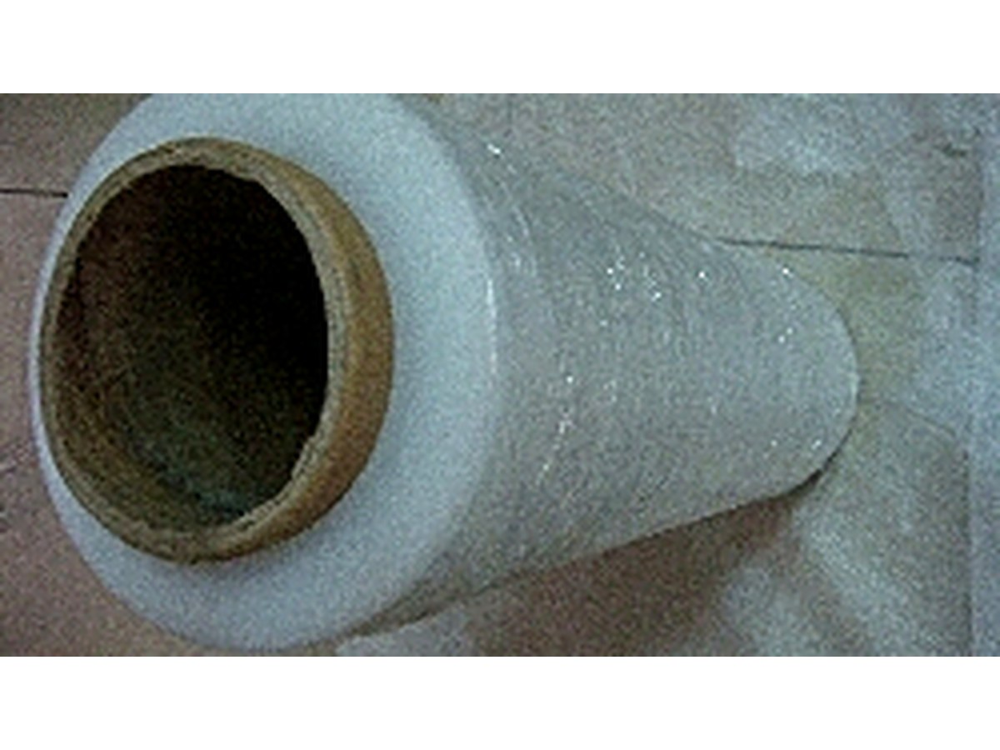
POF、PVC、PE 薄膜与包装袋PE 托盘拉伸薄膜
适合收缩标签与缠绕膜的印刷级产品（厚度 15 – 20 微米（微米）用于 、15-25 微米（微米）用于 设备 -；宽度 50-750 毫米）
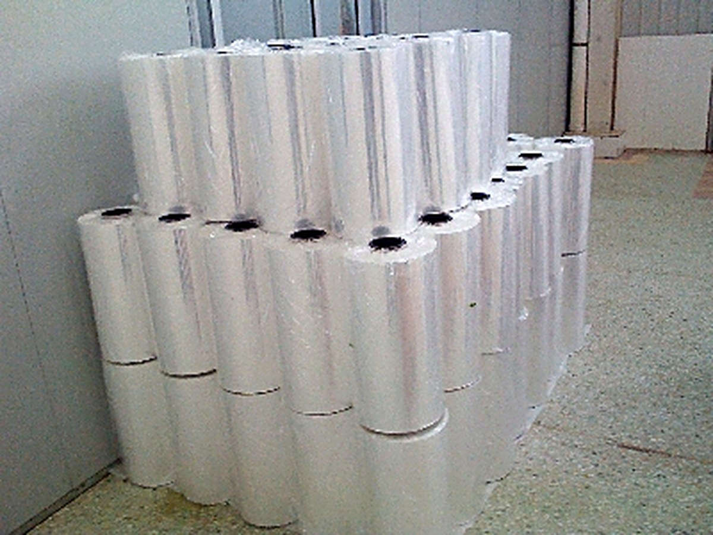
POF、PVC、PE 薄膜与包装袋POF 热收缩缠绕薄膜
适合收缩标签与缠绕膜的印刷级产品（厚度 12-25 微米；宽度 100-1500 毫米；长度 500-3000 米）
 轻涂纸、复印纸、相纸与墨盒耗材
轻涂纸、复印纸、相纸与墨盒耗材
轻涂纸张
白度与平滑度稳定，print 图像清晰
 轻涂纸、复印纸、相纸与墨盒耗材
轻涂纸、复印纸、相纸与墨盒耗材
打字纸张及法律纸张
白度与平滑度稳定，print 图像清晰
 轻涂纸、复印纸、相纸与墨盒耗材
轻涂纸、复印纸、相纸与墨盒耗材
复印纸张
白度与平滑度稳定，print 图像清晰
 轻涂纸、复印纸、相纸与墨盒耗材
轻涂纸、复印纸、相纸与墨盒耗材
短纤表面/画布相纸纸张树脂，防水
白度与平滑度稳定，print 图像清晰（厚度 0.25 毫米/0.27 毫米适用于 全部 、2880 / 5760；宽度 6/ 4/ 3/0.914/1.07/1.27/1.37/1.52 米）
 轻涂纸、复印纸、相纸与墨盒耗材
轻涂纸、复印纸、相纸与墨盒耗材
RC 相纸纸张
白度与平滑度稳定，print 图像清晰
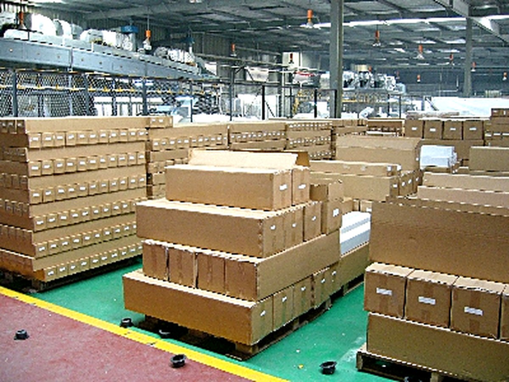
轻涂纸、复印纸、相纸与墨盒耗材RC 相纸纸张光面/哑光
白度与平滑度稳定，print 图像清晰（厚度 0.25 毫米/0.27 毫米适用于 全部 、2880 / 5760；宽度 6/ 4/ 3/0.914/1.07/1.27/1.37/1.52 米）
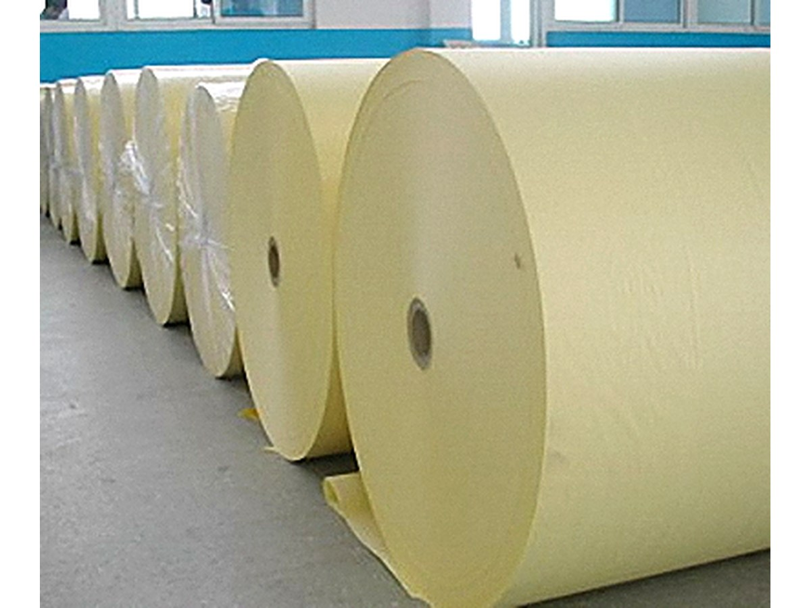
轻涂纸、复印纸、相纸与墨盒耗材下限克重涂布纸张
白度与平滑度稳定，print 图像清晰
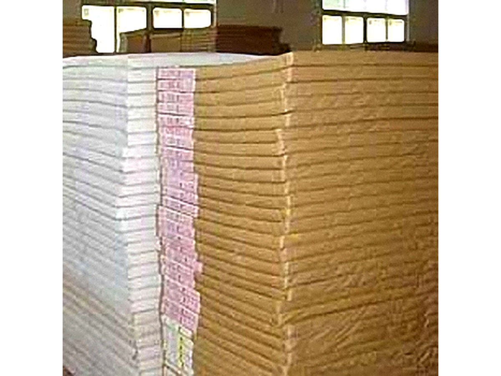
轻涂纸、复印纸、相纸与墨盒耗材透光克重涂布纸张
白度与平滑度稳定，print 图像清晰
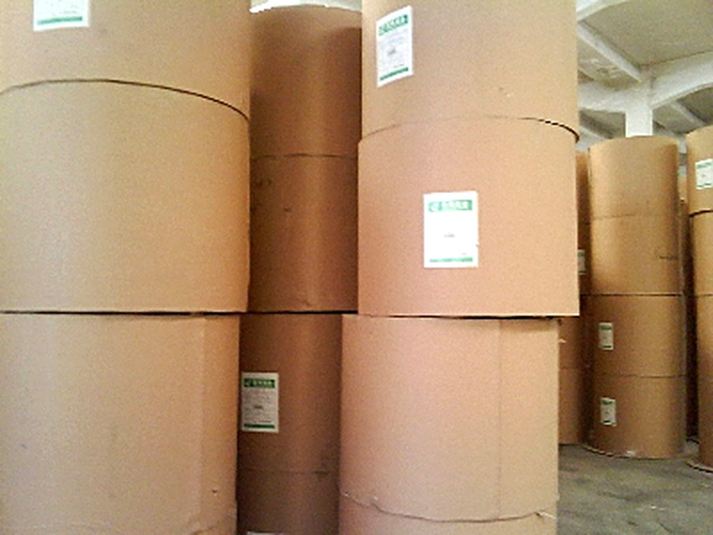
轻涂纸、复印纸、相纸与墨盒耗材70 GSM 轻涂纸张
白度与平滑度稳定，print 图像清晰
 轻涂纸、复印纸、相纸与墨盒耗材
轻涂纸、复印纸、相纸与墨盒耗材
轻涂纸张
白度与平滑度稳定，print 图像清晰
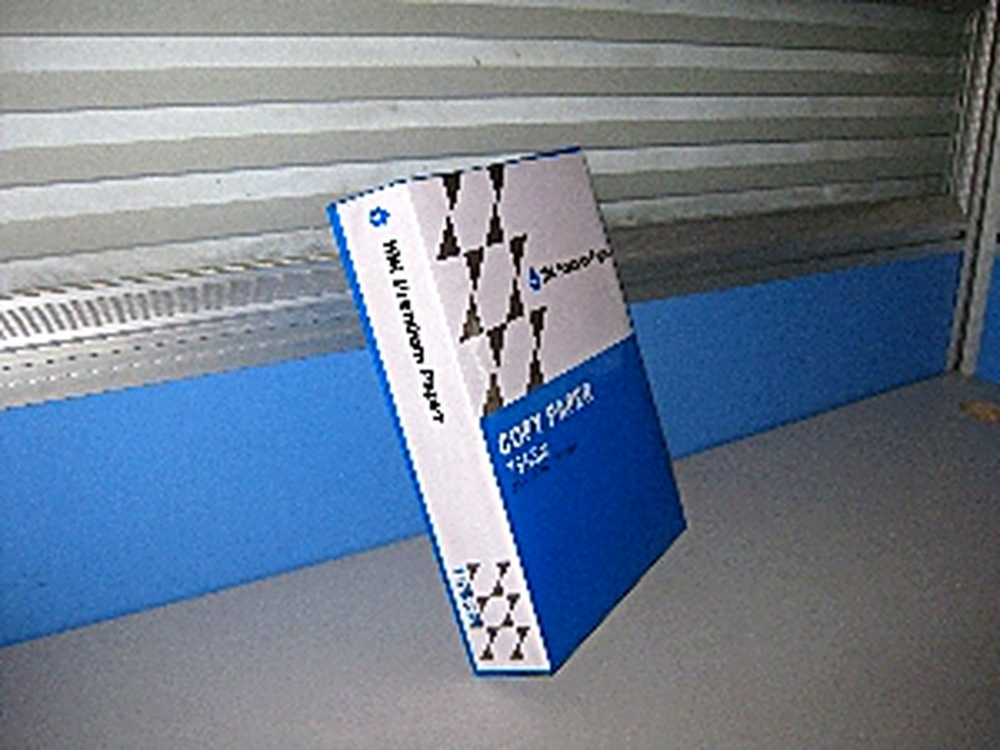
轻涂纸、复印纸、相纸与墨盒耗材复印纸张 OEM 产品
白度与平滑度稳定，print 图像清晰
大卷复印纸张
白度与平滑度稳定，print 图像清晰（宽度 1500 毫米 " ------ 如下）
复印纸张生产产线
白度与平滑度稳定，print 图像清晰
木浆复印纸张
白度与平滑度稳定，print 图像清晰
 轻涂纸、复印纸、相纸与墨盒耗材
轻涂纸、复印纸、相纸与墨盒耗材
复印纸张
白度与平滑度稳定，print 图像清晰
 易撕胶带、烟盒夹、腰带与铝箔
易撕胶带、烟盒夹、腰带与铝箔
烟用胶粘易撕胶带
精确的撕口起点，开启干净可控（纸芯 1" 3" 6" 卷）
 易撕胶带、烟盒夹、腰带与铝箔
易撕胶带、烟盒夹、腰带与铝箔
烟用易撕胶带
精确的撕口起点，开启干净可控
 易撕胶带、烟盒夹、腰带与铝箔
易撕胶带、烟盒夹、腰带与铝箔
易撕毛发胶带自粘胶粘易撕条
精确的撕口起点，开启干净可控（基材 BOPET、BOPP、；颜色 红色 、金色 、银色 、绿色 、蓝色 、黄色 、透明 、等等；长度 5,000 - 50）
 易撕胶带、烟盒夹、腰带与铝箔
易撕胶带、烟盒夹、腰带与铝箔
易撕夹子
精确的撕口起点，开启干净可控（颜色 全部 的 颜色（例如 : 红色 、白色 、蓝色 、绿色 、黄色 、黑色 、））
 易撕胶带、烟盒夹、腰带与铝箔
易撕胶带、烟盒夹、腰带与铝箔
铝箔
精确的撕口起点，开启干净可控（厚度 10 微米 宽度 - 900 或 1200 毫米 = 直径 =600 毫米）
PP 捆扎带及束带
精确的撕口起点，开启干净可控（基材 聚丙烯（PP））
自粘胶粘易撕胶带
精确的撕口起点，开启干净可控（厚度 25-40 微米）；宽度 1.6 毫米-6.0 毫米）；长度 5,000 米-70,000 米印刷 :）颜色）
纸张纸芯套管
精确的撕口起点，开启干净可控（基材 纸张 或 纸张 管芯）
 BOPP 制品
BOPP 制品
BOPP 吸管薄膜
可直接转换的规格，加快产线调试（宽度 90-1200 毫米；长度 3000-9000 米 : 双面可热封，单面可热封）
 BOPP 制品
BOPP 制品
BOPP 袋
可直接转换的规格，加快产线调试（厚度 20 25 26 30 35 微米）
 BOPP 制品
BOPP 制品
装饰 PP 人造丝带花束，皱纹装饰纸网
可直接转换的规格，加快产线调试（基材 聚丙烯（PP））
 BOPP 制品
BOPP 制品
BOPP 镭射薄膜及全息薄膜
可直接转换的规格，加快产线调试（厚度 18-40 微米；宽度 50-1500 毫米；长度 1000-6000 米）
 BOPP 制品
BOPP 制品
BOPP 易撕胶带
可直接转换的规格，加快产线调试（基材 BOPP（或 BOPET、）；宽度 1.2 - 3.0 毫米；长度 5,000 - 50,000 米/）
BOPP/CPP 粗孔及微孔打孔薄膜
可直接转换的规格，加快产线调试（厚度 20、25、28、30、35、40、55 微米；宽度 380 毫米、450 毫米、500 毫米、650 毫米、800 毫米、950 毫米）
BOPP 热薄膜
可直接转换的规格，加快产线调试（厚度 22-33 微米（微米级）薄膜；宽度 325-1200 毫米；长度 3000 米（2000 米、4000 米、6000 米、9000 米））
BOPP 花束套管
可直接转换的规格，加快产线调试（厚度 15-50 微米（微米）；颜色 超透明（透明）、红色 、粉色 、绿色 、白色 、紫色 、蓝色，或印有客户自有商标）
12 微米 BOPP 光面薄膜及 15 UM BOPP 亚光薄膜
可直接转换的规格，加快产线调试（长度 4000 米 数量 :200-250 卷 15 微米 BOPP 薄膜（哑光））
BOPP 镀铝银色薄膜
可直接转换的规格，加快产线调试（颜色 银色（涂布 带 AL。））
BOPP 防雾薄膜
可直接转换的规格，加快产线调试（厚度 20-60 微米）
镀铝 PP 电容器膜锌铝
可直接转换的规格，加快产线调试（宽度 +/-5 毫米；纸芯 3"（76 毫米））
BOPP 电容器薄膜粗糙
可直接转换的规格，加快产线调试（基材 聚丙烯（PP））
 BOPP 制品
BOPP 制品
聚丙烯电容器安全薄膜
可直接转换的规格，加快产线调试（厚度 2.5）
 涂布膜
涂布膜
绒感软触膜（EVA 胶粘涂层）
功能涂层化学配方针对终端用途定制
 涂布膜
涂布膜
热复合 BOPP 薄膜.smaller卷
功能涂层化学配方针对终端用途定制（基材 聚丙烯（PP）；表面处理 电晕处理）
 涂布膜
涂布膜
PVDC 涂布膜(K-薄膜)
功能涂层化学配方针对终端用途定制（厚度 12 微米（用于）、21 微米（用于）、17 微米（用于）；宽度 120-1500 毫米；长度 200-4000 米）
 涂布膜
涂布膜
丙烯酸酸涂布薄膜
功能涂层化学配方针对终端用途定制
 涂布膜
涂布膜
EVA 涂布薄膜(bopp/bopet/bopa)
功能涂层化学配方针对终端用途定制（厚度 22-33 微米（微米级）大卷；宽度 325-1200 毫米；长度 3000 米（4000 米、6000 米、9000 米））
 热销产品
热销产品
BOPP 胶粘带（机械线）
经 OEM 与转换商重复订单验证（基材 聚丙烯（PP））
 热销产品
热销产品
BOPP 薄膜
经 OEM 与转换商重复订单验证（厚度 12~52 微米；宽度 350~1600 毫米 可根据客户需求定制尺寸与规格）
 热销产品
热销产品
聚丙烯薄膜
经 OEM 与转换商重复订单验证（厚度 23-28 微米）电晕处理的平膜级 BOPP 薄膜 。（）
 热销产品
热销产品
BOPP 胶带-grade薄膜
经 OEM 与转换商重复订单验证（厚度 23、25、28 微米 及其他；长度 4,000 米；颜色 透明）
BOPP 花束包装膜
经 OEM 与转换商重复订单验证（厚度 18 微米、25 微米、30 微米、35 微米、40 微米；宽度 500 毫米/600 毫米/700 毫米/800 毫米/1000 毫米、1200 毫米；颜色 超透明、彩色，或印有客户自有商标标签）
BOPET 薄膜
经 OEM 与转换商重复订单验证（宽度 200-1200 毫米）
 热销产品
热销产品
BOPP 胶带大卷晶体
经 OEM 与转换商重复订单验证（厚度 35 微米 - 68 微米）
 热销产品
热销产品
BOPP 胶粘带 设备产线
经 OEM 与转换商重复订单验证（基材 聚丙烯（PP））
CPP 薄膜流延聚丙烯薄膜
经 OEM 与转换商重复订单验证（厚度 20-40 微米、75-150 微米；宽度 325-1100 毫米；长度 3000 米、4000 米、6000 米）
轻涂纸张
经 OEM 与转换商重复订单验证
BOPET 片材
经 OEM 与转换商重复订单验证（基材 聚酯 薄膜 、透明 或 白色；厚度 50、75、90,150,188,250,350,500 微米；宽度 0.3-1.0 米）
 热销产品
热销产品
BOPET 易撕胶带
经 OEM 与转换商重复订单验证（基材 BOPET 薄膜（聚酯 薄膜）；厚度 28-35 微米；宽度 1.5-3.5 毫米）
 热销产品
热销产品
平膜 BOPP 薄膜双向拉伸聚丙烯用于印刷及复合
经 OEM 与转换商重复订单验证（厚度 12~52 微米；宽度 350~1600 毫米 可根据客户需求定制尺寸与规格）
 热销产品
热销产品
打字及法律复印纸张
经 OEM 与转换商重复订单验证
70,75,80 G 办公复印纸张
经 OEM 与转换商重复订单验证
 电子产品
电子产品
CBB 薄膜电容器
转换与包装线用可靠电子元件
 电子产品
电子产品
HC 49 US SMD
转换与包装线用可靠电子元件
 电子产品
电子产品
UM-1,UM-5,S-39,S-38,S-26
转换与包装线用可靠电子元件
 电子产品
电子产品
电子继电器
转换与包装线用可靠电子元件
 机械设备与零部件
机械设备与零部件
分切设备设备及零件
设备与备件与自有膜料品类配套
 机械设备与零部件
机械设备与零部件
法兰
设备与备件与自有膜料品类配套
 机械设备与零部件
机械设备与零部件
FR-1300 分切设备
设备与备件与自有膜料品类配套
 机械设备与零部件
机械设备与零部件
设备设备,设备产线及设备零件
设备与备件与自有膜料品类配套
 机械设备与零部件
机械设备与零部件
印刷设备设备及零件
设备与备件与自有膜料品类配套
包装设备设备及零件
设备与备件与自有膜料品类配套
 机械设备与零部件
机械设备与零部件
分切设备设备及零件
设备与备件与自有膜料品类配套
涂布设备设备及零件
设备与备件与自有膜料品类配套
设备零件系列
设备与备件与自有膜料品类配套
收缩设备
设备与备件与自有膜料品类配套
设备用于使用塑料拉链及拉链设备
设备与备件与自有膜料品类配套
 机械设备与零部件
机械设备与零部件
FR-1300 分切设备
设备与备件与自有膜料品类配套
 深加工包装膜
深加工包装膜
聚丙烯薄膜
多层结构设计，满足高阻隔需求（厚度 23-28 微米）电晕处理的平膜级 BOPP 薄膜 。（）
 深加工包装膜
深加工包装膜
BOPP 花束包装膜（透明与印刷型）
多层结构设计，满足高阻隔需求（厚度 15-50 微米（微米）用于 : 20 25 30 35 40 微米；颜色 透明 或 红色 、粉色 、绿色 、白色 、紫色 、蓝色，或印有客户自有商标；纸芯 1.0" 1.5" 1.8" 2.0" 2.5" 3.0" 英寸 。的 纸芯 用途 卷）
BOPET 电子热转印打印机色带用基膜
多层结构设计，满足高阻隔需求（厚度 3-12 微米（例如 : 4.5、4.4、4.6、5.3、5.8、6.）
电子超薄薄膜
多层结构设计，满足高阻隔需求
BOPP 花束包装膜
多层结构设计，满足高阻隔需求（厚度 18 微米、25 微米、30 微米、35 微米、40 微米；宽度 500 毫米/600 毫米/700 毫米/800 毫米/1000 毫米、1200 毫米；颜色 超透明、彩色，或印有客户自有商标标签）
 4.5 微米 BOPET 薄膜
4.5 微米 BOPET 薄膜
B 级基膜 BOPET TTR 薄膜3.8-4.55微米不涂布,透明
4.5 微米基材，用于超薄热转印色带（纸芯 152 毫米 700 毫米；或4.5 微米 640 毫米 55,000 米）
 4.5 微米 BOPET 薄膜
4.5 微米 BOPET 薄膜
BOPET 聚酯薄膜3.8微米
4.5 微米基材，用于超薄热转印色带（基材 聚酯（PET））
 4.5 微米 BOPET 薄膜
4.5 微米 BOPET 薄膜
BOPET TTR 薄膜聚酯薄膜用于转印 曾 BOPET 热转印色带用基膜
4.5 微米基材，用于超薄热转印色带（宽度 500,600,910,980、1010、1200、1500 毫米；长度 18500 米 18500 宽度 的 卷 910±；长度 15000、17000、20000、24000、37000 米）
 4.5 微米 BOPET 薄膜
4.5 微米 BOPET 薄膜
4.5微米 BOPET TTR (热转印膜)打印机色带用基膜系列
4.5 微米基材，用于超薄热转印色带（厚度 3-12 微米（例如 : 4.5、4.4、4.6、5.3、5.8、6.）
 4.5 微米 BOPET 薄膜
4.5 微米 BOPET 薄膜
4.5微米 BOPET 热转印薄膜( PET 转印薄膜用于条码色带Wax),4.5微米 BOPET TTR 薄膜
4.5 微米基材，用于超薄热转印色带（厚度 4.4、4.5、4.55、4.6、4.8、5.3、5.7 微米；宽度 910、1010 毫米；长度 18000、18500、24000、36000、44,000 米）
BOPET TTR (热转印膜)蜡/树脂色带用透明基膜
4.5 微米基材，用于超薄热转印色带（纸芯 152 毫米 700 毫米；或4.5 微米 685 毫米 55,000 米）
 4.5 微米 BOPET 薄膜
4.5 微米 BOPET 薄膜
BOPET TTR (热转印膜)打印机色带用基膜系列
4.5 微米基材，用于超薄热转印色带（宽度 500,600,910,980、1010、1200、1500 毫米；长度 15000、17000、20000、24000、37000 米；厚度 4.4、4.5、4.55、4.6、4.8、5.0、5.7、6.0 微米）
 4.5 微米 BOPET 薄膜
4.5 微米 BOPET 薄膜
4.5微米 BOPET
4.5 微米基材，用于超薄热转印色带（厚度 3-12 微米（例如 : 4.5、4.4、4.6、5.3、5.8、6.）
4.5微米 BOPET 薄膜
4.5 微米基材，用于超薄热转印色带（宽度 500,600,910,980、1010、1200、1500 毫米；长度 15000、17000、20000、24000、37000 米；厚度 4.4、4.5、4.55、4.6、4.8、5.0、5.7、6.0 微米）
索取样品或报价
告诉我们所需的牌号、厚度与数量，我们的团队会回复规格建议与交期。